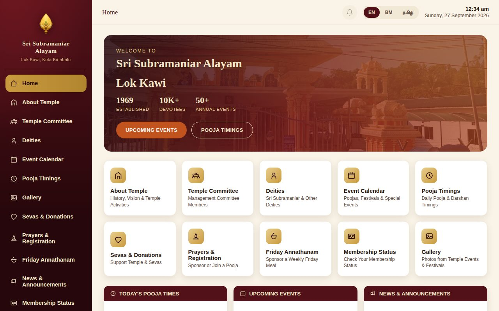
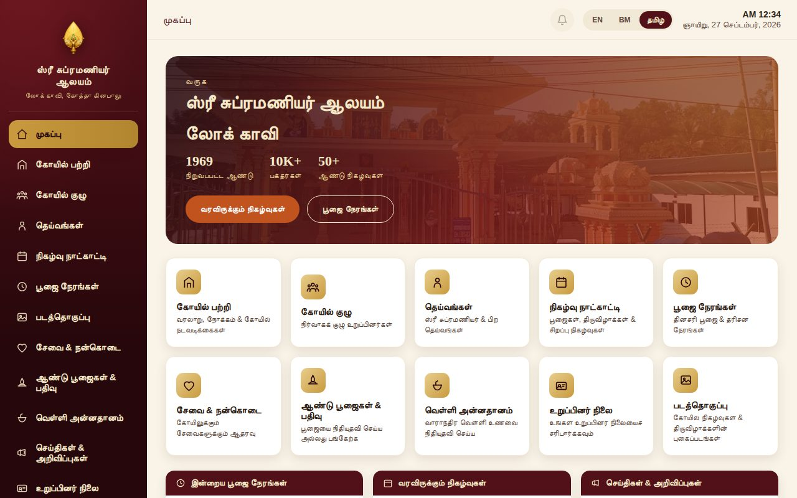
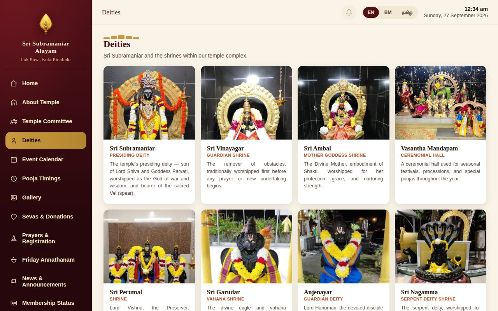

Sri Subramaniar Alayam: One Site, Every Screen
A trilingual touch-screen kiosk, installable app and website for a temple in Lok Kawi, Kota Kinabalu, Sabah — with pooja sponsorship that cannot be double-booked, and a committee-run content system.

The brief
A busy temple runs on its calendar: daily poojas, monthly and annual festivals, weekly Friday Annathanam, and devotees who want to sponsor a pooja or take part in one. The committee needed devotees to see all of this — on a screen in the temple, on their own phones, and on the web — in English, Bahasa Malaysia and Tamil.
They also needed sponsorship registration that would never sell the same slot twice, and a way for volunteer committee members, not developers, to keep everything up to date. Rather than four separate products, the brief called for one.
Two deliverables in one project
One site, every screen
A fixed touch-screen kiosk, a browsable website and an installable phone app — one responsive codebase, deployed everywhere at once.
Run by the committee
Two password-protected admin pages let committee members edit every section and manage registrations themselves — no developer, no redeploy, live instantly.
The approach: one build, every screen
The site is a single progressive web app — one codebase of HTML, CSS and JavaScript, with no separate native app to maintain. The same responsive design adapts to wherever it is opened:
As a temple kiosk, it opens on a full-screen splash featuring Lord Murugan, the temple emblem and a single “Enter” button. Inside, a left-hand navigation rail and large tiles make it easy to use by touch, and after a period of inactivity it returns itself to the home screen so the next visitor starts fresh.
On a phone, the rail becomes a slide-in menu and the tiles reflow into a compact app layout. It can be installed to the home screen and keeps working offline after the first visit.
On a desktop browser, it opens out into a full temple website with the same navigation rail, hero banner and content tiles.
Because it is one build, a change — a new event, a corrected pooja time, a new photo — is made once and appears correctly everywhere.

What’s running underneath
The visible experience is only part of the story. A few things happen behind the scenes that a typical temple website doesn’t do:
Registration that can’t double-book. The Prayers & Registration page lists each pooja and shows which of three roles are still open: Ubayakarar (the pooja sponsor), Annathanam sponsor and Participant. Bookings are made in a Postgres database that locks the slot while it is being claimed, so even two devotees submitting the same Ubayakarar slot in the same second cannot both succeed. Poojas are marked Upcoming or Completed automatically by date, and Completed poojas keep their sponsor and participant records as the temple’s permanent record.
Clear rules for payment. For an annual-prayer Annathanam slot, the site only records who has claimed it — the devotee arranges and pays the caterer directly, and the page lists the temple’s regular caterers. Ubayakarar, paid participation and weekly Friday Annathanam sponsorship show a DuitNow QR to pay, then proof of payment is sent over WhatsApp, and the committee confirms each booking from the admin page.
A committee-run CMS. More than fifteen sections — hero banner, home tiles, deities, pooja timings, sevas, announcements, gallery, membership, committee members, notice ticker and more — are edited from a browser dashboard. Photos are resized in the browser and uploaded straight to storage.
Individual admin logins. Instead of one shared password, each committee member has their own username and password, with separate access for Content and for Prayers & Bookings, and a master account that can add, change or remove logins. Removing someone’s access takes effect on their next click.
Privacy-first membership lookup. Devotees check their membership status by membership number. Only the matched record is ever returned to the browser, and the NRIC is never sent to the public page.
A trilingual experience. English, Bahasa Malaysia and Tamil are built in across pages, menus and even committee names, and switch instantly without a reload.
Reaching devotees. Visitors can turn on notifications with the bell icon, and the committee sends a message to every subscribed device from the CMS — with no personal details collected. A configurable welcome popup, notice ticker and WhatsApp “Chat with Us” card can each be switched on or off from the same dashboard.
A real production deployment. The site runs on its own domain (srisubramaniarlokkawi.org) with SSL, auto-deploying from Git through a serverless host. If the database is ever unreachable, the site falls back to a bundled copy of its content instead of going blank.

Why one build instead of several
The obvious alternative — a kiosk application, a separate mobile app and a separate website — would have meant several codebases to keep in sync and several places for a bug to hide every time the temple wanted to add a festival or fix a timing. Building it once as a responsive PWA means:
- One update ships everywhere at once.
- One CMS controls every screen’s content.
- A new display — a second kiosk or a different tablet — costs almost nothing to add; it is just another screen size the same app already fills.
For a temple run by volunteers without an in-house IT team, that maintainability is arguably a more valuable decision than any single feature on the page.